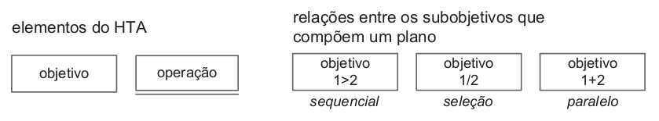
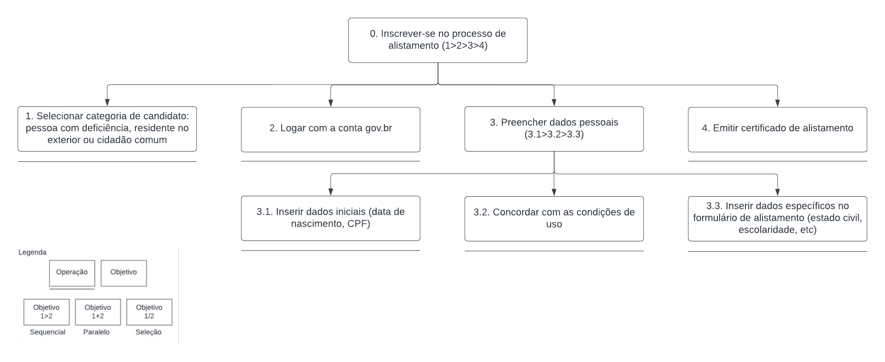

Análise de Tarefas
1. Conceituação
"Uma análise de tarefas é utilizada para se ter um entendimento sobre qual é o trabalho dos usuários, como eles o realizam e por quê. Nesse tipo de análise, o trabalho é definido em termos dos objetivos que os usuários querem ou precisam atingir" (BARBOSA e SILVA, 2011, p.191).
A questão central da análise de tarefas é definir - por meio de métodos de coleta, classificação e interpretação de dados - um desempenho satisfatório para um sistema e seus componentes, isto é, não se trata apenas de listar ações, mas compreender como um sistema de trabalho afeta o domínio de aplicação, e vice-versa.
A coleta de um conjunto de objetivos (psicológicos) das pessoas produz listas de ações realizadas (no mundo físico e através de sistema computacional) por um agente para alcançá-los. No entanto, independentemente da maneira como os dados para uma análise sejam coletados, haverá somente uma simulação das verdadeiras tarefas de interesse, devido ao número potencialmente abrangente de tarefas realizadas por diferentes pessoas e a limitação para obtenção de dados, de modo que estes estarão sempre incompletos (Diaper, 2003).
A análise de tarefas deve buscar identificar dados conflitantes e disparidade entre o relato oficial e a prática do trabalho através de informações obtidas em entrevistas, questionários, documentação e programas de treinamento e sistemas existentes.
Em posse disso, tendo em vista que o presente trabalho visa avaliar o desempenho de um sistema que já foi implementado, serão analisadas, de forma concreta e detalhada, duas tarefas amplamente utilizadas pela maioria dos usuários: alistar-se e acompanhar a situação do processo - utilizando a Análise Hierárquica de Tarefas (HTA), e emitir o certificado de dispensa - por meio do GOMS (Goals, Operators, Methods, and Selection Rules).
2. A Análise Hierárquica de Tarefas (HTA)
"A Análise Hierárquica de Tarefas (HTA – Hierarchical Task Analysis) foi desenvolvida na década de 1960 para entender as competências e habilidades exibidas em tarefas complexas e não repetitivas, bem como para auxiliar na identificação de problemas de desempenho (Annett, 2003; Annett e Duncan, 1967). Ela ajuda a relacionar o que as pessoas fazem (ou se recomenda que façam), por que o fazem, e quais as consequências caso não o façam corretamente. Ela se baseia em psicologia funcional, e não comportamental, como eram as abordagens da época em que foi criada." (BARBOSA e SILVA, 2011, p.192)
Componentes importantes da HTA:
- Tarefa: qualquer parte do trabalho que precisa ser realizada, definida em termos de seus objetivos. Tarefas complexas são definidas em termos de objetivos e subobjetivos, num desdobramento hierárquico denominado decomposição de tarefas.
- Objetivo: estado específico de coisas, definido por um ou mais eventos ou por valores fisicamente observáveis. A HTA examina primeiramente os objetivos de alto nível, decompondo-os em subobjetivos, buscando identificar quais subobjetivos são mais difíceis de atingir (ou que geram mais erros) e que, portanto, limitam ou mesmo impedem o atingimento do objetivo maior.
- Plano: define os subobjetivos necessários para alcançar um outro objetivo maior, e a ordem em que esses subobjetivos devem ser alcançados. Os planos podem definir diversas relações entre os subobjetivos: sequência fixa, regra de seleção ou decisão, ou em paralelo.
- Operação: unidade fundamental na HTA (nível mais baixo da hierarquia de objetivos), especificada pelas circunstâncias nas quais o objetivo é ativado (input ou entrada), pelas atividades ou ações (actions) que contribuem para atingi-lo e pelas condições que indicam o seu atingimento (feedback).
- Ação: instrução para fazer algo sob certas circunstâncias. Pode ser vista formalmente como uma regra de transformação entre estados.
A HTA pode ser dada na forma textual (e. g., por meio de uma tabela) ou diagramas. Na segunda opção, utilizaremos a notação representação na Figura 1 abaixo:

Figura 1: Elementos do diagrama (Fonte: MARTINS, Bruno; 2023).
2.1. Análise da tarefa: inscrever-se no processo de alistamento
A tarefa "inscrever-se no processo de alistamento" é uma das principais que os usuários realizam no sistema, de acordo com o que foi identificado pelo perfil de usuário. A Tabela 1 e a Figura 2 exibem a HTA dessa tarefa em seu formato textual e via diagrama, respectivamente.
| Objetivos/Operações | Problemas e recomendações |
|---|---|
| 0. Inscrever-se no processo de alistamento. (1>2>3>4) | input: acesso pelo botão "Quero me alistar" na tela inicial. feedback: tela final com a opção de imprimir o certificado de alistamento. plano: selecionar a categoria de candidato, logar com a conta gov.br, preencher dados pessoais e emitir o certificado de alistamento. recomendação: sincronizar as bases de dados do gov.br e serviço militar, para que não se torne exaustivo ao usuário inserir todas as suas informações pessoais. |
| 1. Selecionar categoria de candidato: pessoa com deficiência, residente no exterior ou cidadão comum. | |
| 2. Logar com a conta gov.br. | |
| 3. Inserir os dados pessoais. (3.1>3.2>3.3) | plano: inserir os dados iniciais, concordar com as condições de uso, e então prosseguir com dados específicos para o formulário de alistamento. |
| 3.1. Dados iniciais (data de nascimento, CPF). | |
| 3.2. Concordar com as condições de uso. | |
| 3.3. Dados espefícios para o formulário de alistamento. | |
| 4. Emitir o certificado de alistamento. |
Tabela 1: HTA para o objetivo "inscrever-se no processo de alistamento". (Fonte: MARTINS, Bruno; 2023).

Figura 2: Diagrama HTA para o objetivo "inscrever-se no processo de alistamento". (Fonte: MARTINS, Bruno; 2023).
2.2. Análise da tarefa: Acompanhar o alistamento
A tarefa "Acompanhar o alistamento" é uma funcionalidade que permite que o usuário tenha acesso a situação atual do seu processo de alistamento. A Tabela 2 e a Figura 3 exibem a HTA dessa tarefa em seu formato textual e via diagrama, respectivamente.
| Objetivos/Operações | Problemas e recomendações |
|---|---|
| 0. Acompanhar Alistamento | input: acesso pelo botão "Acompanhar Alistamento" na tela inicial. feedback: Tela com dados do usuário, datas de alistamento e data de emissão do documento correspondente. plano: acessar o link para emissão de certificado ou acessar o link para agendar atendimento do candidatos, ambos relacionados a outra página. recomendação: Criar botões secundários que permitem que os usuários sejam redirecionados para a atividade que ele quer realizar. |
| 1. Solicitar certificado | input: Abrir o link para solicitação de certificado feedback: Dados do requerimento, status e situação do pagamento da taxa de emissão. plano: Apenas observação dos dados recomendação: Esta funcionalidade poderia estar relacionada apenas com a tarefa de emissão do documento requerido. Na segunda página, aparece opções de local e data para agendamento |
| 2. Agendar atendimento na junta militar | input: Acesso pelo link de agendamento feedback: Tela com as opções de seleção do local e da data para atendimento. plano: Selecionar o local para o agendamento e a data desejada, de acordo com a disponibilidade. recomendação: Esta funcionalidade já está na página principal, não havendo a necessidade dela em forma de um link nessa página. |
Tabela 2: HTA para o objetivo "Acompanhar o alistamento". (Fonte: BARRETO, João; 2023).
2.3. Análise da tarefa: Encontrar os locais de atendimento
Outra tarefa importante é a de "Encontrar os locais de atendimento", a qual permite que o usuário encontre a junta militar mais próxima para se apresentar e efetivar o alistamento.
| Objetivos/Operações | Problemas e recomendações |
|---|---|
| 0. Pesquisar local de atendimento | input: Acesso pelo botão "Locais de Atendimento" na página inicial. feedback: Apresentação de todas as juntas disponíveis para o dado pesquisado e mensagem de erro, caso não tenha um município correspondente ao que foi inserido. plano: Barra de pesquisa para ser digitado o município desejado e um botão para pesquisar, com o ícone de uma lupa, além das opções de ir para a próxima página de Juntas Militares, caso hajam mais de 10 na pesquisa realizada. recomendação: Deve haver a possibilidade de agendar o atendimento ou tirar dúvidas pelo próprio site, sem necessitar do contato via telefone ou e-mail. |
| 1. Filtrar lista de locais | input: Campo de pesquisa para encontrar algum bairro ou informação do tipo para filtrar os locais já listados na funcionalidade anterior. feedback: Resultado dos filtros aplicados a pesquisa. plano: Digitar o filtro e encontrar os resultados desejados. recomendação: Esta funcionalidade poderia permitir a seleção de bairros como filtro, a partir de um botão com múltiplas escolhas já definidas. |
Tabela 3: HTA para o objetivo "Pesquisar local de atendimento". (Fonte: BARRETO, João; 2023).
2.4. Análise da tarefa: Autenticar certificado
A tarefa de "Autenticar certificado" consiste na verificação a autenticidade de um documento a partir de seu registro (RA) e de seu código autenticador.
| Objetivos/Operações | Problemas e recomendações |
|---|---|
| 0. Verificar autenticidade | input: Acesso pelo botão "Autenticar Certificado" na página inicial. feedback: Diz se o documento é válido ou inválido por meio de uma mensagem na mesma tela. plano: Uma barra de pesquisa para ser digitado o registro RA e outra barra para o código autenticador, além do botão "autenticar" para executar a funcionalidade recomendação: Deve haver a orientação do formato em que o RA e o código devem ser inseridos. |
Tabela 4: HTA para o objetivo "Autenticar certificado". (Fonte: BARRETO, João; 2023).
3. GOMS (Goals, Operators, Methods, and Selection Rules)
O GOMS é um método de analise de tarefas que concede a representação do conhecimento que é necessário para a realização de uma tarefa por parte de um usuário. Estão inclusos nessas representação: goals que são estruturas simbólicas que definem um estado de coisas a ser alcançado e determinam um conjunto de métodos possíveis pelos quais isso pode ser alcançado; operators que são as ações na qual o software permite com que o usuário execute e que estão relacionadas diretamente com o dispositivo em si; methods que são as sequências claras de goals e operators na qual possibilitam o usuário de concluir a tarefa; selection rules que são as regras que o usuário pode seguir para decidir qual método ele irá utilizar para atingir determinada meta (goal).
3.1. Análise da tarefa: solicitar o certificado de dispensa.
A tarefa de solicitar o cerificado de dispensa é uma parte importante dentro do site do Alistamento Militar Online, trata-se da parte final do processo de alistamento. Para efetuar a solicitação há apenas um caminho dentro do site, no entanto, antes de concluir, é necessário escolher a forma de pagamento para a emissão do documento, sendo assim, surge uma bifurcação antes de chegar na meta. Dessa maneira, é possível fazer uma análise de tarefas GOMS que parte da situação inicial para a selection rules, essa dá origem a dois methods, cada method possui seus operators específicos, ao final, ambos os methods convergem para uma goal em comum, ou seja, a meta final do processo.
- GOAL 0: solicitar o certificado de dispensa
- GOAL 1: acessar a página como já alistado
- METHOD 1.A: acessar a página pela opção - já me alistei
- (SEL. RULE: a página de início está aberta com as opções disponíveis)
- OP 1.A.1: clicar no botão - já me alistei
- GOAL 2: acessar a aba de requererimento do certificado de dispensa
- METHOD 2.A: Acessar pela opção - Requerer certificado de dispensa
- (SEL. RULE: a página principal está aberta com todas as funcionalidades disponíveis, pensando no usuário que já se alistou)
- OP 2.A.1: clicar no botão - requerer certificado de dispensa
- GOAL 3: realizar o pagamento da taxa do certificado
- METHOD 3.A: pagamento o boleto por alguma das opções - pix, cartão de crédito e boleto bancário
- (SEL. RULE: a página de requerer certificado está aberta e o boleto para pagamento aparece na tela)
- METHOD 3.A.A: pagamento por pix
- OP 3.A.A.1: selecionar a opção pagar com pix
- OP 3.A.A.2: escanear o QR code
- OP 3.A.A.3: efetuar o pagamento pelo banco
- METHOD 3.A.B: pagamento por cartão de crédito
- OP 3.A.B.1: selecionar a opção pagar com cartão de crédito
- OP 3.A.B.2: efetuar pagamento pelo cartão
- METHOD 3.A.C: pagamento por boleto bancário
- OP 3.A.C.1: selecionar a opção pagar com boleto bancário (GRU simples)
- OP 3.A.C.2: escanear o código de barras do boleto
- OP 3.A.C.3: efetuar o pagamento pelo banco
- METHOD 3.A.A: pagamento por pix
- GOAL 4: Solicitar o certificado de dispensa:
- METHOD 4.A: requerer o certificado de dispensa
(Após o pagamento ter sido aprovado, na mesma aba estará disponível o documento)
- OP 4.A.1: analisar visualmente o documento na própria página
- OP 4.A.2: clicar na opção de gerar documento PDF, se preferível
- METHOD 4.A: requerer o certificado de dispensa
(Após o pagamento ter sido aprovado, na mesma aba estará disponível o documento)
- GOAL 1: acessar a página como já alistado
Diagrama 1: GOMS para a tarefa "Solicitar o certificado de dispensa". (Fonte: BARRETO, João; 2023).
Bibliografia
BARBOSA, Simone; DINIZ, Bruno. Interação Humano-Computador. Editora Elsevier, Rio de Janeiro, 2010.
Análise de tarefas. Disponível em: https://github.com/Interacao-Humano-Computador/2022.2-Lichess. Acesso em 07 de abril de 2023.
Histórico de versão
| Versão | Data | Descrição | Autor(es) | Revisor(es) |
|---|---|---|---|---|
1.0 |
07/05/2023 | Criação inicial do documento: conceitos iniciais e HTA | Bruno Martins e Gabriel Souza | João Barreto e Danilo Carvalho |
1.1 |
07/05/2023 | Adição da análise GOMS | Gabriel Souza | João Barreto e Danilo Carvalho |
1.2 |
27/05/2023 | Adição de mais 3 tarefas da análise HTA | João Barreto | Bruno Martins |
1.3 |
04/03/2023 | Refatoração da análise de tarefas do tipo GOMS | João Barreto | Bruno Martins |